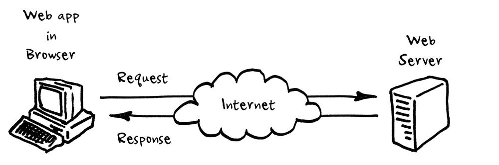
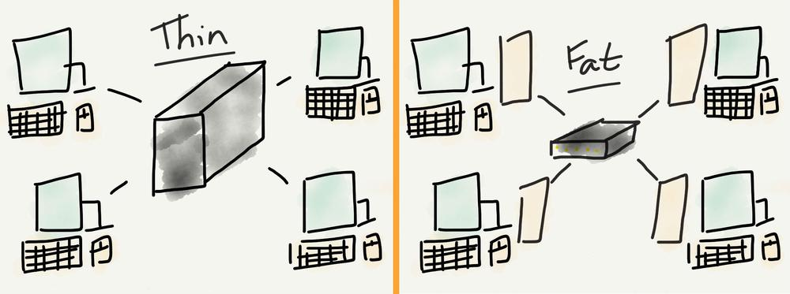
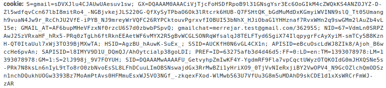

Michelberger Tamás
tomi.michel@gmail.com
PÉK · VIR · SSO · JAVA · SÖR
HTTP · JS · HTML · CSS
Előadás- és segédanyagok:
https://github.com/kir-dev/tanfolyam

 Kép forrás
Hagyományosan éles határvonal.
Manapság ez már nem igaz.
fejléc + törzs
Minden kérés független egymástól.
A protokoll megkerülése.
forrás

nem csak böngésző